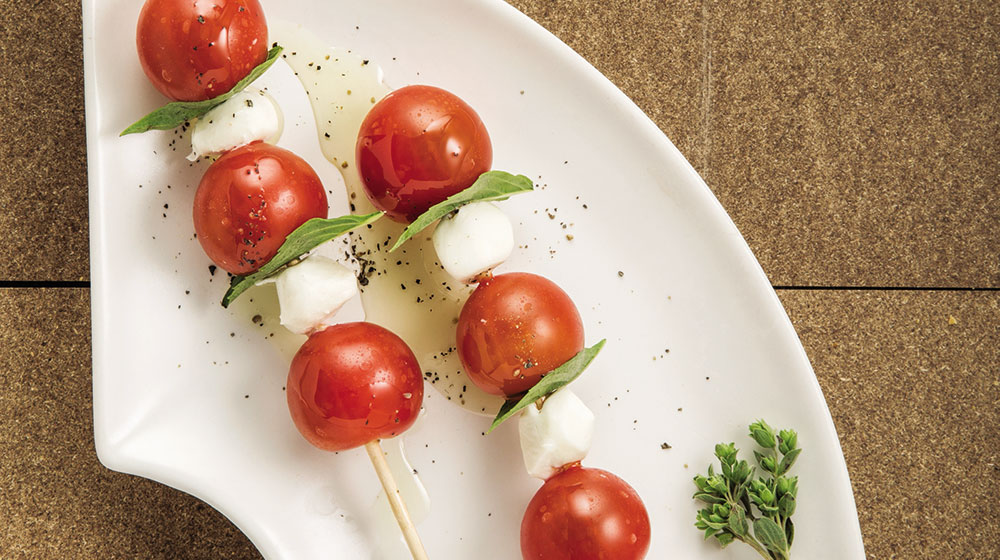

Capresse salad

Caprese salad is a simple Italian dish that consists of fresh mozzarella,
tomatoes and basil.
Steps
- 2 large ripe tomatoes
- 1 pound of fresh mozzarella cheese
- 2 tablespoons of extra-virgin olive oil
- 2 tablespoons of balsamic vinegar
- Salt and pepper, to taste
- Fresh basil leaves, for garnish
Instructions
-
Begin by slicing the tomatoes and mozzarella cheese into thick slices.
-
Arrange the slices of tomatoes and mozzarella on a large platter or
serving dish.
-
Drizzle the olive oil and balsamic vinegar over the top of the tomatoes
and mozzarella.
- Sprinkle salt and pepper over the top of the salad.
- Garnish with fresh basil leaves.
- Serve and enjoy.
Note: You can use cherry tomatoes, some people prefer them to big
tomatoes, also you can add some arugula or mixed greens to the dish, and
you can add some chopped fresh basil to the vinaigrette and/or top the
salad with it.
Go back to menu